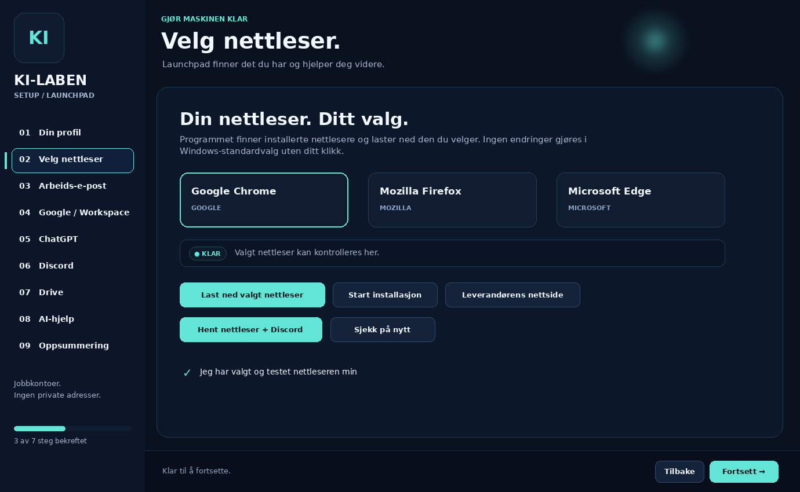
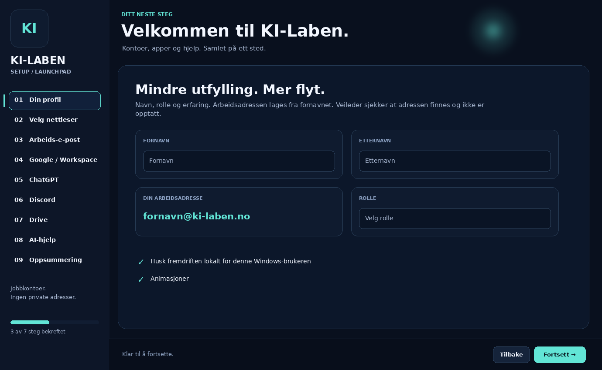

Nettleseren du foretrekker.
Velg Chrome, Firefox eller Edge. Programmet kan se etter installasjoner og hjelpe med nedlasting fra leverandøren.
Mindre kontokaos. Mer tid til å skape.
Samle nettleser, arbeidskontoer og verktøy i én ryddig oppstart.
Tilgjengelige versjoner og filer finner du på GitHub Releases.

Designforhåndsvisning · ikke et verifisert skjermbilde fra en ferdig release.
Fra første arbeidsadresse til de viktigste verktøyene. Tydelige valg, egen fremdrift og hjelp akkurat der den trengs.
Velg Chrome, Firefox eller Edge. Programmet kan se etter installasjoner og hjelpe med nedlasting fra leverandøren.
Oppstarten bruker fornavn@ki-laben.no. Ingen private e-postadresser trengs i profilskjemaet.
Finn ChatGPT-invitasjonen i Domeneshop-webmail. Hent Discord-installasjonen og bruk serverinvitasjonen fra veileder.
AI-hjelpen kan kobles til en separat server. Når den ikke er konfigurert, skal vanlig veiledning ikke fremstilles som AI.
KREVER OPPSETT AV AI-GATEWAYBekreft at hvert steg virker. Lokal fremdrift og en oppsummering gjør overleveringen til veileder enklere.
Nedlasting og installasjon er separate valg. Innlogging, verifisering og sikkerhetsvarsler skal ikke omgås.
Utforsk fire visninger fra designarbeidet. Bildene er UI-forhåndsvisninger; den faktiske Windows-utgaven kan avvike.
Navn og KI-Laben-adresse samlet på ett sted.

Launchpad ordner rekkefølgen. Medlemmet bekrefter tilganger og innlogging på tjenestenes egne sider.
Registrer profil og velg nettleser.
Arbeids-e-post, Google og ChatGPT-invitasjon.
Discord, Drive og AI-veiledning.
Se bekreftede steg og det som gjenstår.
En publisert Windows-pakke for medlemmer. Kildekode og dokumentasjon for dem som bygger og drifter løsningen.
KiLabenSetup.exe.Sjekk kilde, utgiver og eventuelle kontrollsummer. Denne siden garanterer ikke at en release er testet eller signert.
Prosjektpakken er satt opp for Visual Studio 2026, .NET 10 og Windows Forms. Finn gjeldende krav i repoet før bygging.
git clone https://github.com/Darschnid479/Setup.gitRyddige forventninger er også en del av god onboarding.
Dette er presentasjonssiden til Windows-programmet KI-Laben Setup. Du kan lese og se UI-forhåndsvisninger her. Selve oppstarten skjer i Windows-programmet, ikke på GitHub Pages.
Nei. Programmet samler steg, lenker og nedlastinger. En veileder må klargjøre nødvendige tilganger. Google-verifisering, ChatGPT-invitasjon og innlogging fullføres hos tjenestene. Domeneshop-postkassen må eksistere først.
AI-funksjonen krever en konfigurert server/gateway. API-nøkkelen skal ikke distribueres i Windows-klienten. Denne nettsiden inneholder ingen AI-nøkkel og sender ikke spørsmål til AI.
Se GitHub Releases. Knappen kan oppdateres til en Windows x64 ZIP når en slik fil finnes i den nyeste stabile releasen. Hvis GitHub ikke kan nås, beholdes lenken til oversikten.
Opprett en issue med versjon, hva du forsøkte og selve feilmeldingen. Fjern navn, passord, tokens og private filstier fra logger og skjermbilder først. Del aldri hemmeligheter i offentlige issues.
Åpne issues ↗Et felles startpunkt. Færre løse tråder.